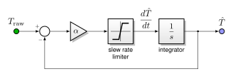
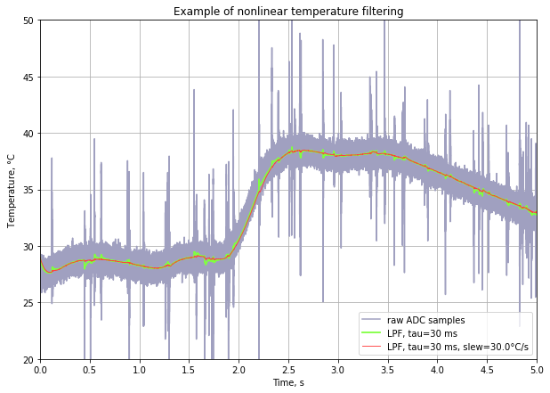

5.9. 温度测量¶
带有功率级温度传感器（“桥臂温度”）的板在 MCAF 中受支持，带有基本的信号调理。此温度传感器应放置在三相桥的功率晶体管上或附近。
桥臂温度信号可供一般使用（例如，验证 动态电流限制 参数），也用于 检测过温故障状态，这会导致 状态机 进入 MCSM_FAULT 状态并禁用驱动器。
5.9.1. 滤波¶
为了减少噪声测量的影响，使用低通滤波器处理原始温度测量值 \(T_{\rm raw}\)，如 图 5.120所示，得到温度估计值 \(\hat{T}\)。

图 5.120 温度滤波框图¶
此低通滤波器包含旋转率限制。只要输出旋转率低于指定的最大温度变化率，低通滤波器的传递函数为 \(\frac{1}{\tau s + 1}\)，其中 \(\tau = 1/\alpha\) 为滤波器的有效时间常数，由增益 \(\alpha\)。
旋转率限制器的存在是为了减少突发噪声对温度测量的影响。示例如 图 5.121。

图 5.121 温度滤波中突发噪声的仿真¶
虽然原始温度读数上存在噪声尖峰是一个警告信号，应调查以确定电路设计或 EMI 管理问题，但 MCAF 中的温度滤波旨在利用温度传感器输出的过采样。
5.9.2. 实现说明¶
温度感测在 MCAF R7 中添加。
5.9.2.1. 实现源代码¶
温度传感器的滤波在 MCAF_ADCReadNonCritical()中完成，位于 adc_compensation 模块。
5.9.2.2. 缩放¶
MCAF 中的温度信号以 0.01°C/计数 缩放，范围为 −327.68°C 到 +327.67°C。
MCAF R7 目前仅支持线性温度传感器。
5.9.2.3. 滤波参数和状态变量¶
MCAF 在每个电流环采样周期内滤波温度感测信号 \(T_s\)，通常为 50 μs。估计温度的状态变量 \(\hat{T}\) 是一个 32 位整数，高 16 位用作输出——换句话说，状态变量本身为 0.01°C/每 65536 计数。这允许滤波时间常数长达 \(\tau = 65536 T_s\)。（3.27 s， \(T_s =\) 50 μs）
每采样周期 1 到 32767 计数之间的旋转率——对于 \(T_s =\) 50 μs 为 0.003°C/s 到 100°C/s——受支持。
5.9.2.4. 板级支持¶
以下两者均 dsPIC33CK 低压电机控制 (LVMC) 开发板 和 MCS MCLV-48V-300W 开发板 板均包含安装在功率晶体箧之间的 MCP9700 温度传感器（10mV/°C，0.5V 偏置）。 MCHV-230VAC-1.5kW 电机控制高压开发板 功率模块包含内置 NTC 热敏电阻用于温度监控，连接到微控制器的模拟引脚。